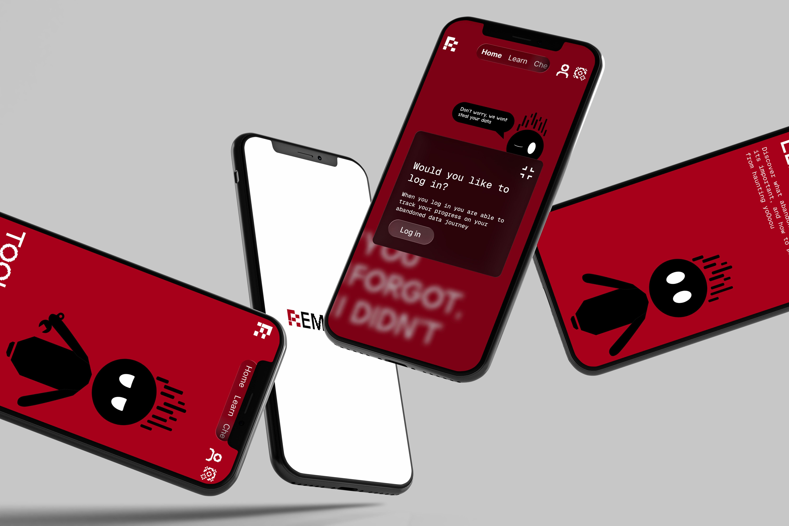
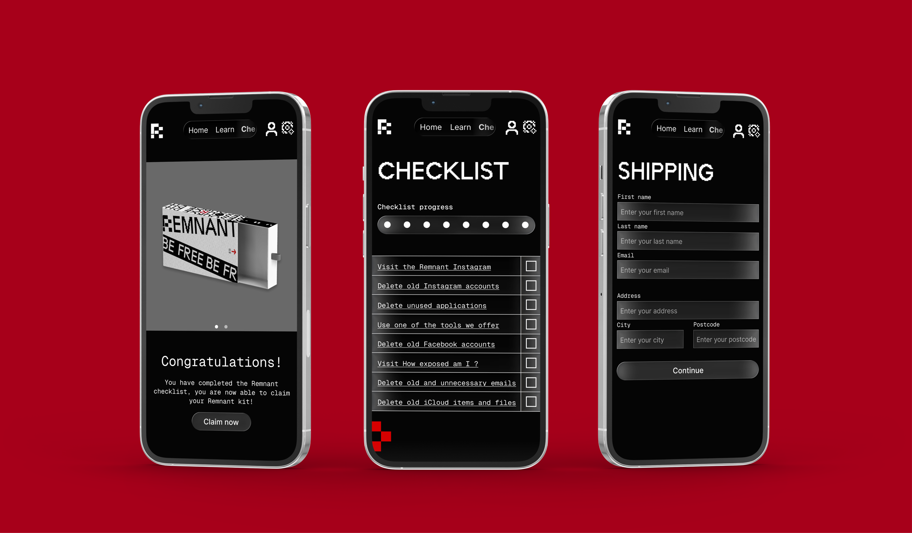
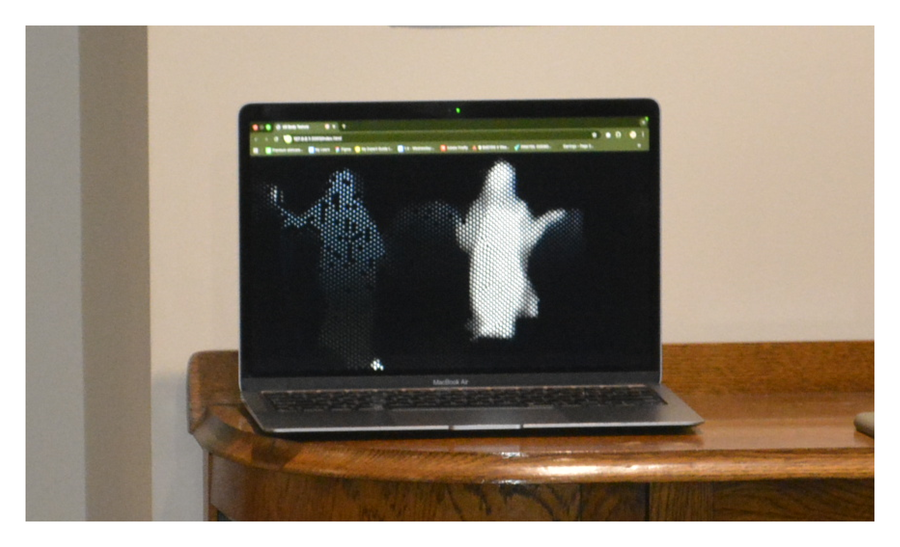
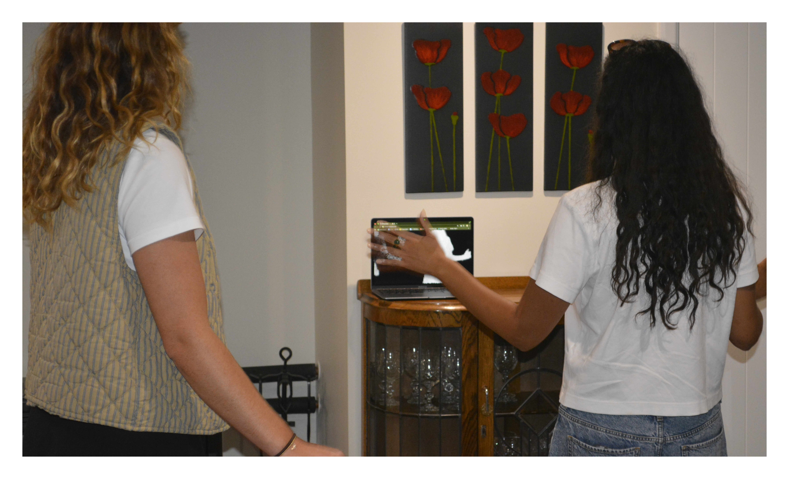
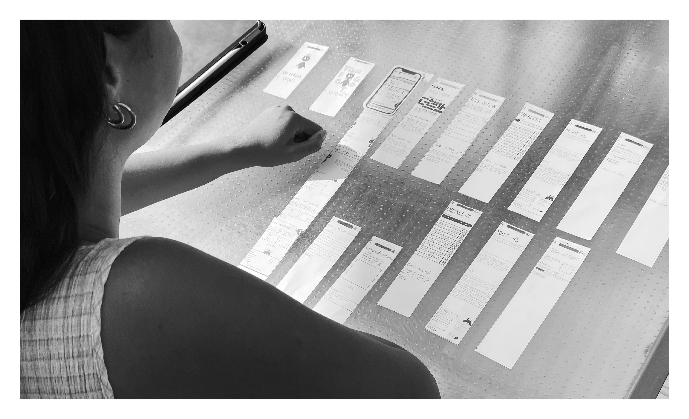
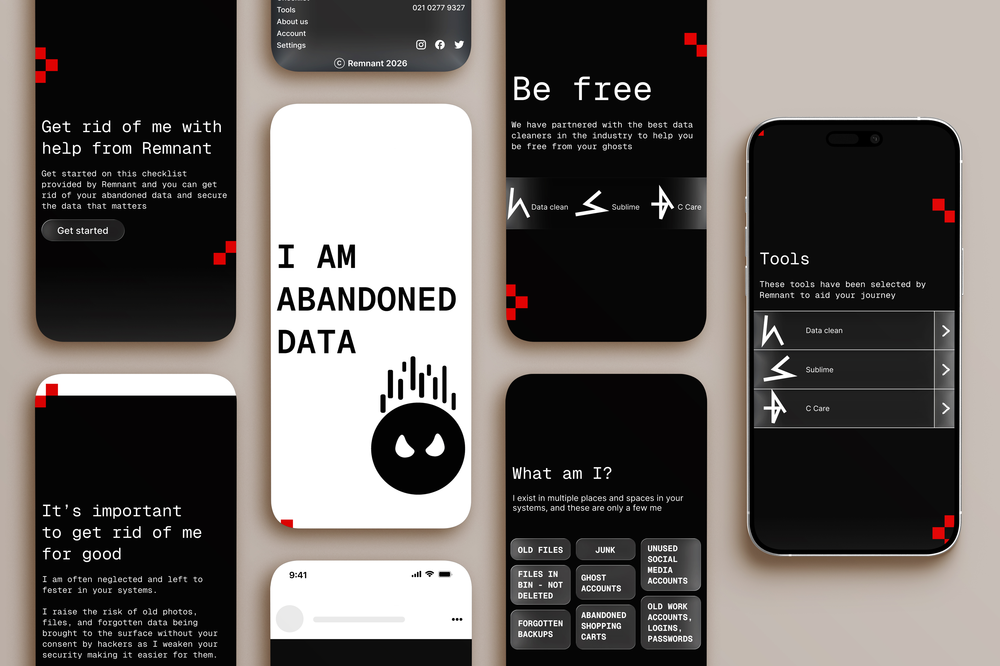

Remnant
2026Overview
Remnant is a learning and action hub designed to raise awareness around abandoned data and encourage users to take action in preventing their data being leaked. Created by Remote studios, this project explored how a campaign, including UX/UI design, could make a forgotten everyday issue more engaging and understandable in an exciting way.


The challenge
The challenge for this project was making abandoned data feel visible and applicable to users as well as actually helping them to be aware of it. Because abandoned data is invisible and not something people are seeing in everyday life, most people are unaware of its existence and therefore don't feel its impact, leading them to dismiss any motivation to take preventative measures.
This project needed to be able to balance engagement, education, and usability while still keeping our audience interested in the subject.
The problem
Many 25–35 year olds in New Zealand unknowingly hold onto abandoned data, causing them to lose control over how it's used and risking past digital data resurfacing in ways that feel intrusive.
We used this as the base for our project which helped us when it came to ideation and research into solutions.


Findings
Findings through research, interviews, and feedback helped us to shape our project's focus into an immersive and action based solution. The interviews surrounding abandoned data revealed the following:
- Users didn't know abandoned data existed
- Users don't take security preventative measures for their data
- Digital cleanup feels overwhelming for users
Ideation
Through ideation, exploration into different ways to visualise abandoned data was conducted with a multitude of different outcomes, however, there were concerns regarding the initial solutions timeline and appeal to the audience. Upon secondary ideations, a campaign was created that fit both into the education and actionable criteria for our audiences benefit.


The solution
The solution became an awareness campaign into abandoned data, with four key sections, two of which I was in charge of. I headed the interactive bus stops, and the information hub which we now call Remnant and was the key point of this campaign. The Remnant website combined educational content, visual storytelling, guided actions, and an incentive upon completion.
Approach
The Approach to the development of this project was extremely experimental on my part and I had quite a lot of fun with it. I discovered new possibilities and unique code such as selfie segmentation. The approach also focused heavily on the following:
- User testing
- Paper prototyping
- Lo-fi prototyping
- Feedback
- Environmental design consideration


The Outcome
The outcome of this project was positive, with the users notably excited by both the interactive campaign and information hub with users wanting to take action against their abandoned data with Remnant.
Overall, Remnant successfully addressed an invisible issue and transformed it into an engaging user experience that focused on encouragement and reflection of the users digital habits and security.
This project also strengthened my skills in the following:
- UX/UI Design
- Experimentation
- Prototyping
- Leadership
- Communication
- Conflict Resolution